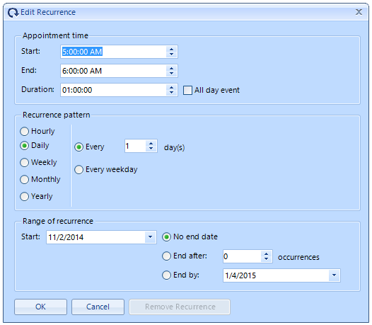
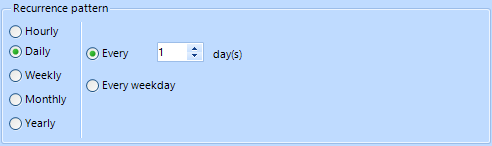
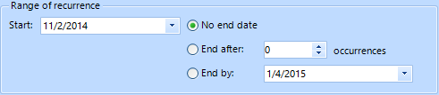
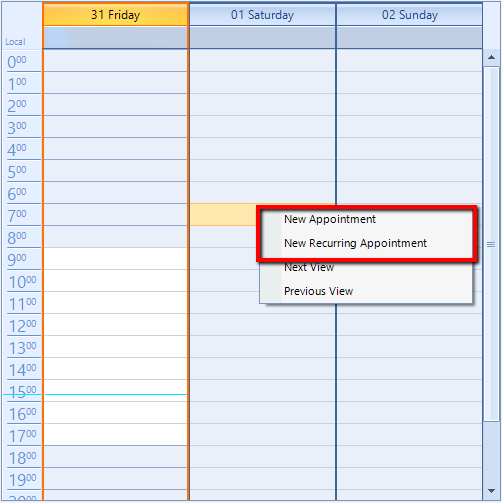

Adding Appointments
Much like Microsoft Outlook, RadScheduler for WinForms offers several ways of creating new appointments:
By double-clicking on the scheduler surface.
By using the context menu.
You can prohibit end-users from creating, moving, resizing, and copying scheduled appointments.
Adding an appointment by double-clicking on the scheduler surface
In the scheduler surface, select the __start time__when you want the appointment to occur.
Double-click on the time and an “Edit Appointment Dialog” will appear.

In the dialog the end user can do the following:
Enter or change the appointment Subject
Enter or change the appointment Location by typing in the edit control.
Change the appointment Background
Change the starting and ending times of the appointment. You can type in new dates/times,
or, to change the date, you can press on the drop down button to bring up a calendar control;Specify that the appointment is an all-day event using the "All day event" check box.
If you specify an all-day event, you do not need to specify starting and ending times.Enter values for any resources. In the edit form shown above, you can enter a user, materials,
and topics for the appointment.Change the appointment Status.
Enter or change the Description
To create a recurring appointment, press the Recurrence button and the "Edit Recurrence Dialog" will appear.
In the recurrence dialog you can do the following:
Specify appointment hours and duration
Specify how often the appointment recurs. Recurrence can be Daily, Weekly, Monthly, or Yearly.
Specify the duration between the occurrences of a recurring appointment
Specify when the recurrence ends
When you are ready press the Ok button to accept the changes or press the Cancel button to cancel them.
Adding an appointment by double-clicking on the scheduler surface
In the scheduler surface, with the moust select the duration of the appointment (drag the selection from the starting time to the end time)
when you want the appointment to occur.Right-click on the selection to invoke the context menu. Select the desired option.
Adding an appointment through inline editors
The RadScheduler supports inline editors. Their purpose is to create an appointment without using the EditAppointmentDialog form.
When the user selects a cell or sequence of cells and start typing in them the RadScheduler creates a temp appointment in the
active view. This appointment will be added to RadScheduler if the user presses button “Enter” or the active editor looses its focus.

Logical View
The logical view functionality keeps the settings that are applied to the current view and applies the settings which are
equal for the different views (for example DefaultTimeZone). The view state will be persisted automatically when switching to a different view.